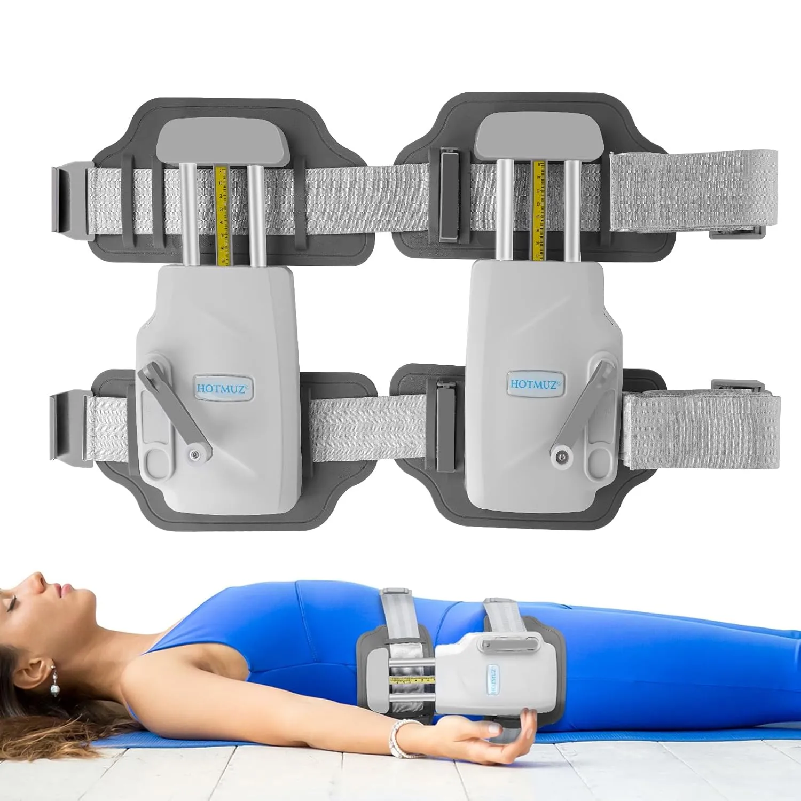
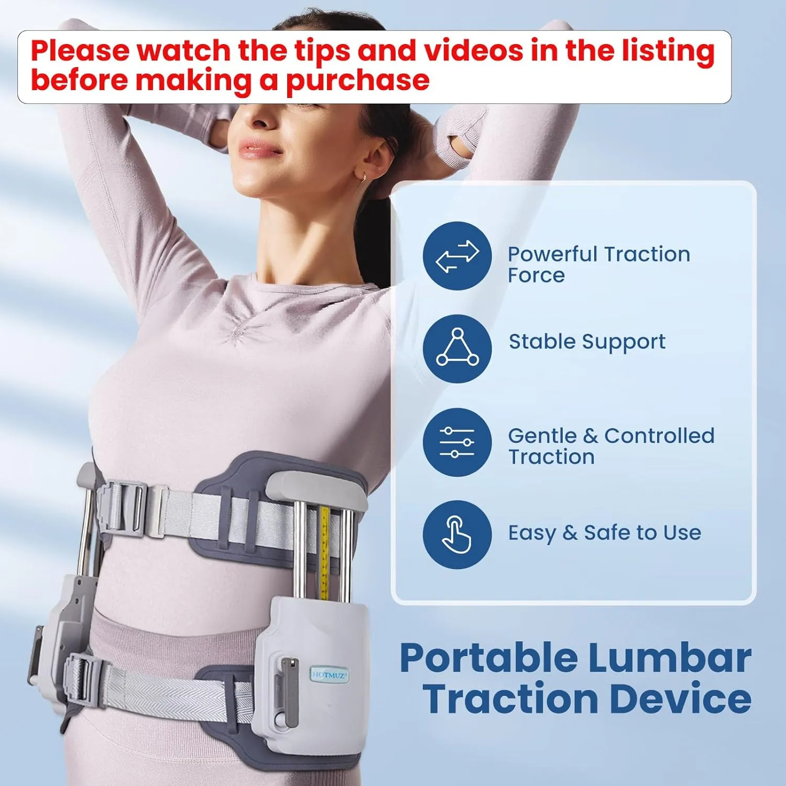
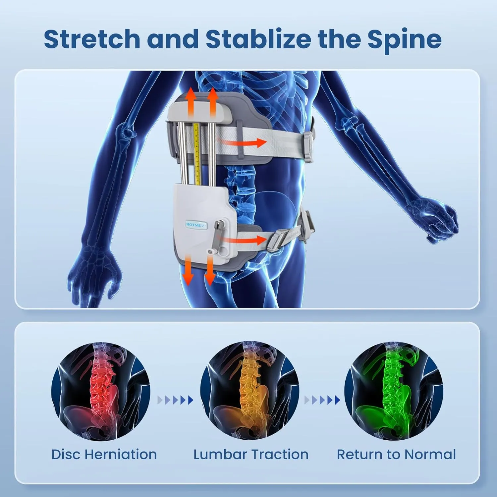
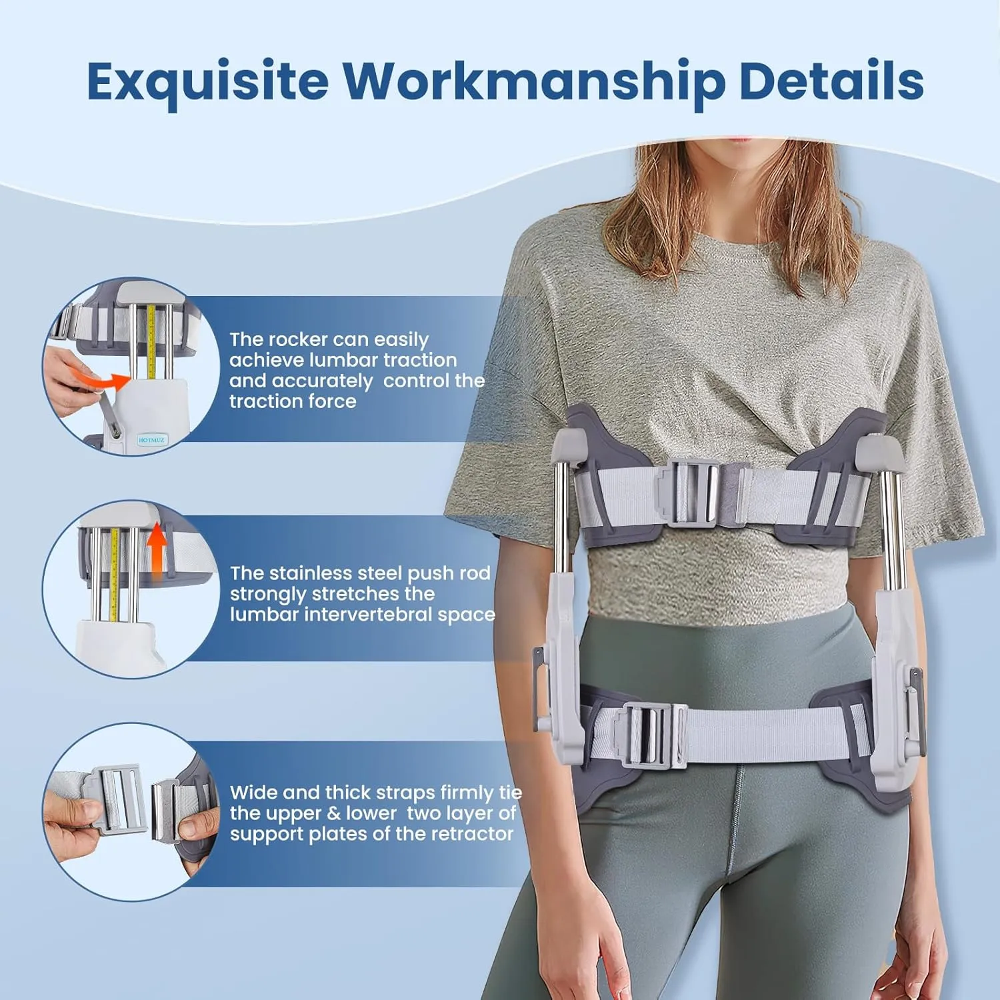
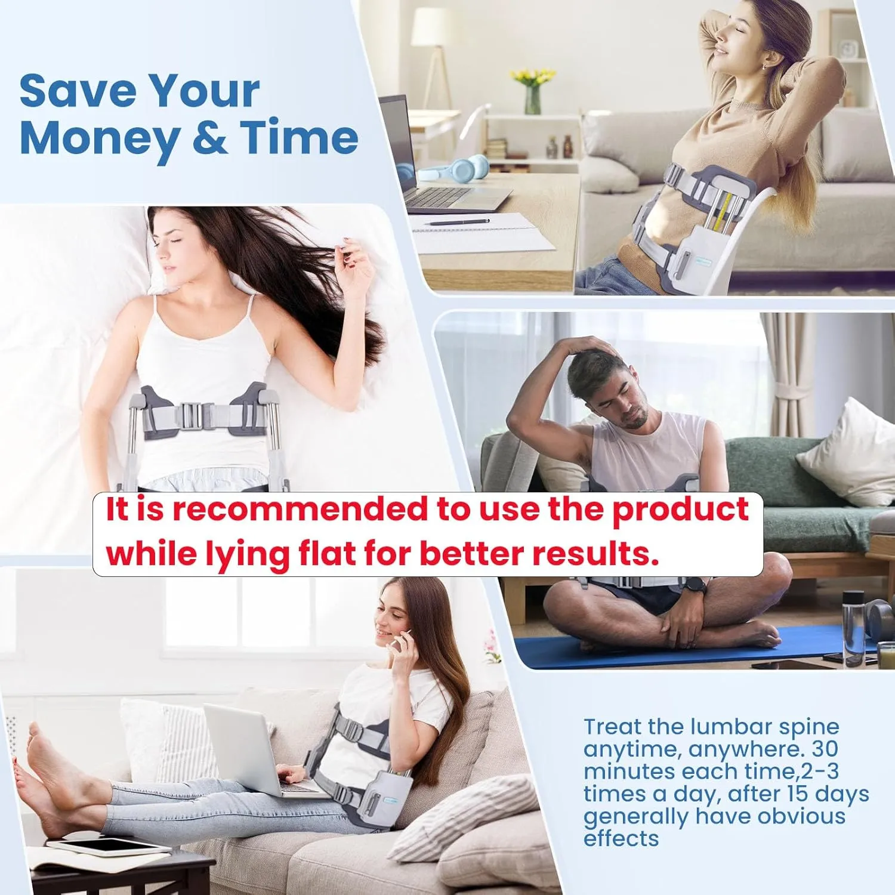
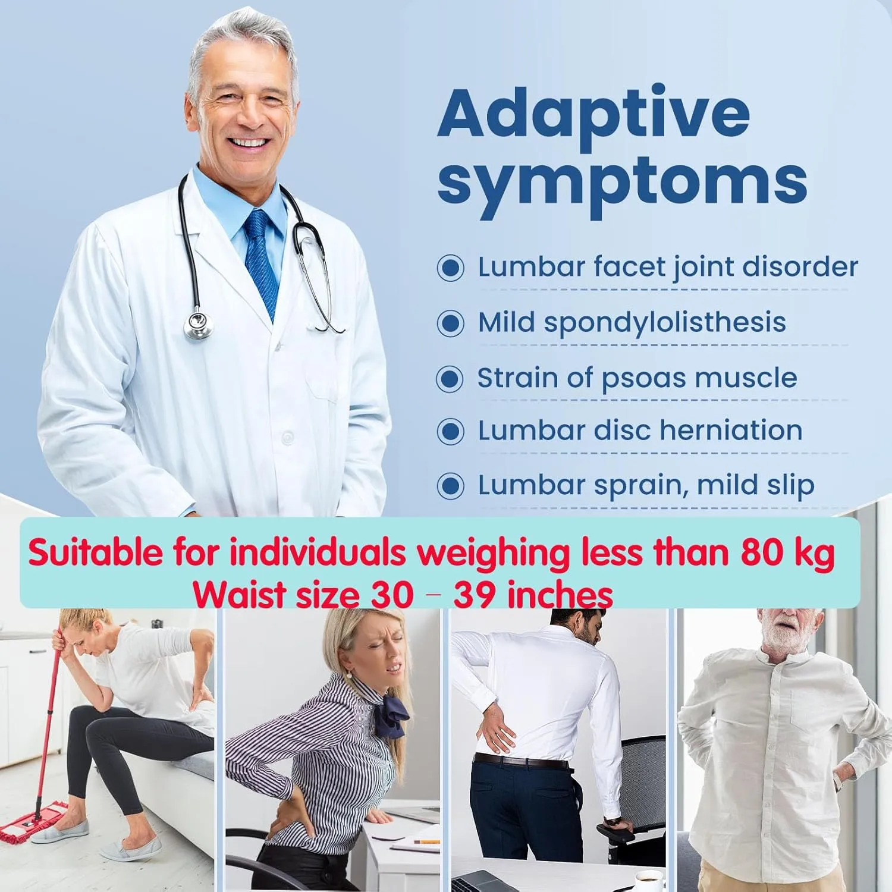

Made for focused lower-back support
The device wraps around the torso and uses a structured frame to provide support around the lumbar area during home-use sessions.
This manual lumbar traction device is designed for shoppers who want a wearable, adjustable support option for focused at-home rest sessions.
This is an editorial affiliate page. The product is sold on Amazon, not directly by The Merchant. Always check the live listing for fit, instructions, pricing, availability, and current product details before ordering.

This device is not a slim under-clothes belt. It is a more rigid home-use support system with straps, rods, and a manual adjustment mechanism.

The device wraps around the torso and uses a structured frame to provide support around the lumbar area during home-use sessions.
Instead of a fixed brace feel, the hand-operated mechanism lets users gradually adjust the traction sensation according to the listing instructions.
Because the product is structured and visible, it is better positioned as a home routine tool rather than something to wear discreetly under clothes.
The product images highlight a lumbar support concept: upper and lower support points, side straps, and a traction adjustment system around the lower torso.

The graphic shows separated support around the lumbar area. Treat it as a product concept image, not a medical guarantee.
Wide straps and support plates help the device stay positioned while the frame creates the structured support feel.
If you have severe pain, sciatica symptoms, herniated disc concerns, surgery history, numbness, or a diagnosed condition, ask a qualified clinician before using traction products.
The device uses visible hardware rather than soft compression alone. That is exactly why fit, comfort, and correct use matter before buying.

The product images show a rocker-style manual mechanism intended to adjust traction force gradually.
The listing highlights stainless steel push rods as part of the stretching and support structure.
The wide strap system is designed to tie the upper and lower support areas together and help keep the device secure.
The product images recommend lying flat for better use. That makes the product a better fit for short, focused sessions at home.

It is best framed as a product for structured home sessions, where you can follow the instructions carefully and adjust slowly.
Since the product is bulky and structured, lying flat or resting at home is likely more realistic than moving around with it for long periods.
Before ordering, review the Amazon product videos and fit instructions so you understand setup, positioning, and expectations.
A good product page should help shoppers decide faster. These are the main reasons the device may be worth comparing.
Good for shoppers comparing home lumbar support tools before choosing a more expensive or time-consuming option.
The adjustment mechanism gives the device a more controlled feel than a basic elastic support belt.
Rods, plates, and straps create a more substantial setup for people who want something stronger than soft compression.
This is a fit-sensitive product. Waist size, body shape, comfort expectations, and health background all matter.

Product images show a 30–39 inch waist range. Confirm the current Amazon listing before buying.
Product images mention suitable individuals weighing less than 80 kg. Treat this as listing guidance to verify.
This device is not designed to disappear under clothing. Expect a visible, structured support system.
Read the current instructions, watch the listing videos, and start cautiously if you decide to use it.
This section replaces unsafe review-style claims with buyer guidance that helps visitors make a more realistic decision.
These answers are written as shopping guidance, not medical advice.
No. A regular brace usually focuses on compression and support. This device is more structured and uses a manual adjustment mechanism intended to create a traction-style support feel.
It is probably not ideal for that. The device has visible rods, plates, and straps, so it is better viewed as a home-use support tool rather than a discreet everyday brace.
Do not rely on this page or the product listing for medical decisions. If you have sciatica-like symptoms, a herniated disc diagnosis, numbness, weakness, or severe pain, ask a qualified clinician before using a traction product.
Check the current Amazon listing for waist range, weight guidance, setup videos, instructions, return policy, product dimensions, and current customer feedback directly on Amazon.
View the Amazon page for current price, availability, sizing, setup videos, instructions, and customer reviews directly on Amazon.